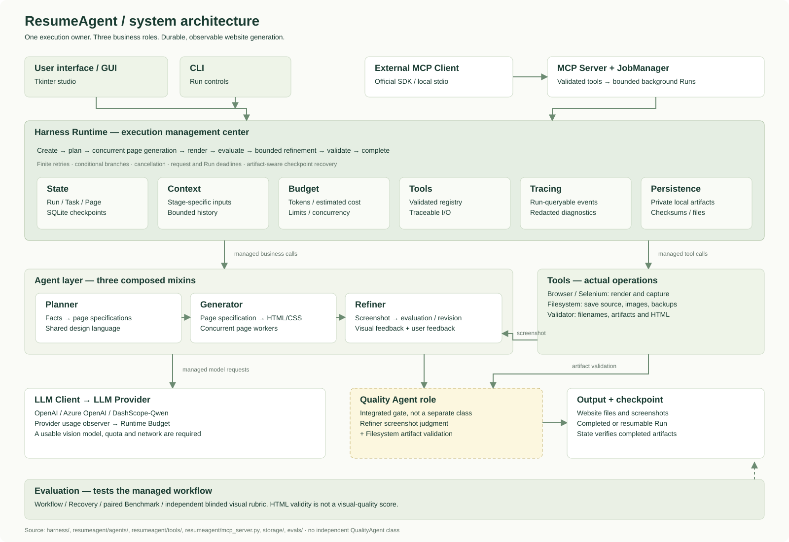
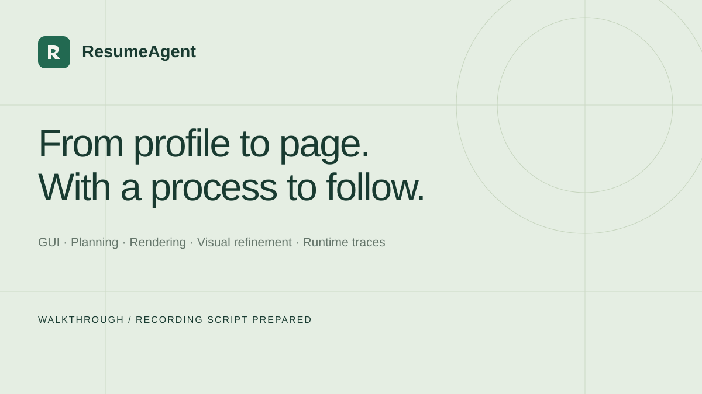

Facts in. A site out.
Organize a biography, achievements, projects and skills into coherent page specifications. English and Chinese modes share a validated output contract.
BUILT WITH PYTHON · DESIGNED TO RESUME
An Agent Harness for Personal Website Generation
From a factual profile to a rendered, refined website. ResumeAgent brings planning and visual feedback together with the engineering that keeps a generation task on track.
Read the project guide →Plan → generate → render → evaluate → refine → validate
Historical Qwen-generated sample with Selenium capture. Fictional profile; not a new release benchmark or visual-quality score.
A convincing personal website needs content, design and iteration. A dependable generator also needs limits, checkpoints and a way to explain what happened.
Organize a biography, achievements, projects and skills into coherent page specifications. English and Chinese modes share a validated output contract.
Selenium renders real HTML. Screenshot evaluation and user feedback guide bounded refinement, instead of relying on source code alone.
Persist page progress and artifact checkpoints. Resume unfinished work without automatically regenerating pages that already passed validation.
The Harness owns control flow. Agents reason about the website. Registered tools perform the actual operations. Every interface enters the same execution system.

A precise note on quality. “Quality Agent” describes an integrated role: Refiner screenshot evaluation plus artifact validation. This repository does not contain a separate QualityAgent class or a fourth autonomous agent.
Three business roles work under one Runtime. Select a step to see its actual input, output and implementation.
CONTENT → SPECIFICATION
Planner turns the factual profile and design feedback into page specifications, with a shared design language and page-specific content structure.
resumeagent/agents/planner.pyThe practical part of building an agent is managing everything that happens before, between and after requests.
run_id = runtime.create_run(profile)
result = await runtime.execute(run_id)
# After an interruption:
result = await runtime.resume(run_id)
# Inspect persisted progress:
runtime.state.pages(run_id)One execution owner: stage order, page concurrency, branching, retries and cancellation.
SQLite Run, Task and Page records. Verify artifacts before reusing completed checkpoints.
Build stage-specific inputs from facts, plans, feedback, paths and bounded history.
Track tokens and estimated cost; bound concurrency, iteration count and elapsed time.
Register browser and filesystem operations with validated arguments and explicit results.
Query stage, model, tool, usage and error metadata by Run ID. Keep sensitive diagnostics local.
An external client can submit a generation job, follow its progress and retrieve preview metadata through the official Python MCP SDK over local stdio.
generate_homepageValidated profile → bounded Runtime job → Run ID
get_generation_statusRun ID → overall progress, usage and page states
preview_homepageRun ID + Page ID → confined local preview information
TRY IT WITHOUT API CHARGES
python examples/mcp_client.pyThe default example exercises all three tools over stdio using mock LLM and browser fixtures. Live mode requires credentials and can incur provider charges.
Client configuration & permissions →Release checks distinguish offline control-flow tests, real browser rendering and model-generated historical artifacts. None is a substitute for a blinded visual evaluation.
Measured release evidence is loading. Read the static test report.
A real generated page is shown above. The next step is recording the complete GUI → Runtime → browser → MCP walkthrough.

2–3 MINUTE WALKTHROUGH
The script covers fictional profile input, planning, multi-page generation, screenshot refinement, the integrated quality gate, Run traces, MCP and automated tests.
Read the demo script ↗Watch the recorded demo ↗A video link will appear only after an actual recording is supplied. No MP4 is bundled.
Python and asyncio for execution. SQLite for state. Selenium for actual rendering. No additional agent framework.
EXPLORE THE IMPLEMENTATION